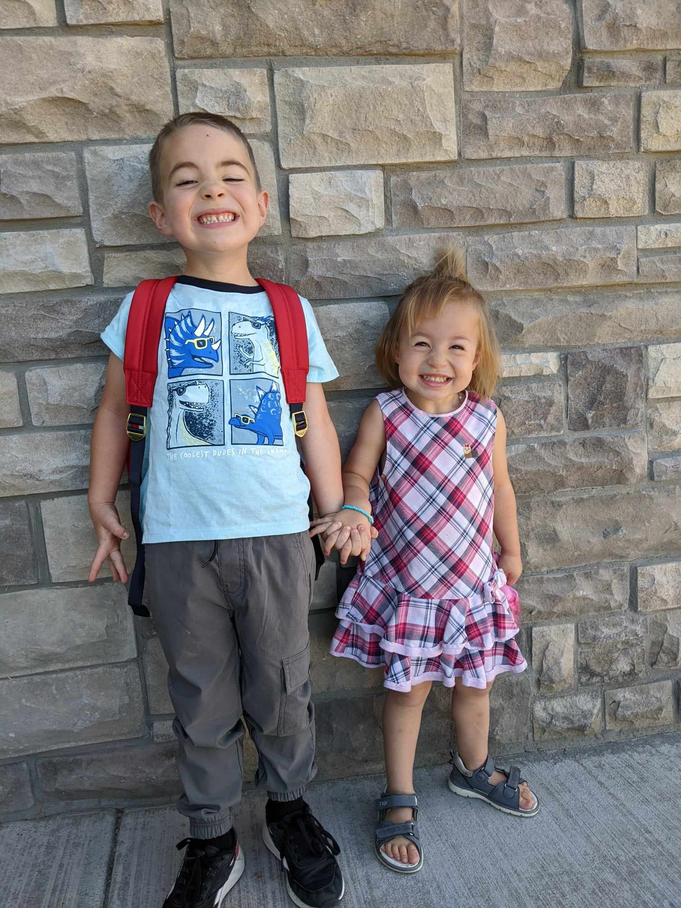

About Me
My name is Abby, I love rainstorms, brownies, plants - especially the low maintainence ones, and people. . .even though I don't seem like it. I'm working on getting my master's degree in social work, learning web development, dancing for fun, and raising two little toddlers as a single mom. I work as a youth mentor for teenagers.
Skills
- Learning Korean
- 1.5 years of practice
- Working towards taking TOPIK 1 (Korean literacy test)
- TTMIK Textbooks
- TOPIK Study Course
- Music, Podcasts, Shows
- Currently working on master's in Social Work
- Aiming towards becoming a Licensed Clinical Social Worker
- Certifications
- CPR
- CERT
- Family Instructor
- Basic Coding/Web Development Skills
- Tech-Mom
- Clay Art as a Hobby
Experience
- Worked as a youth mentor for a resident boy's treatment facility.
- Published children's book author
- Victim's advocate for Sanpete County
- Youth Mentor at PSB treatment facility